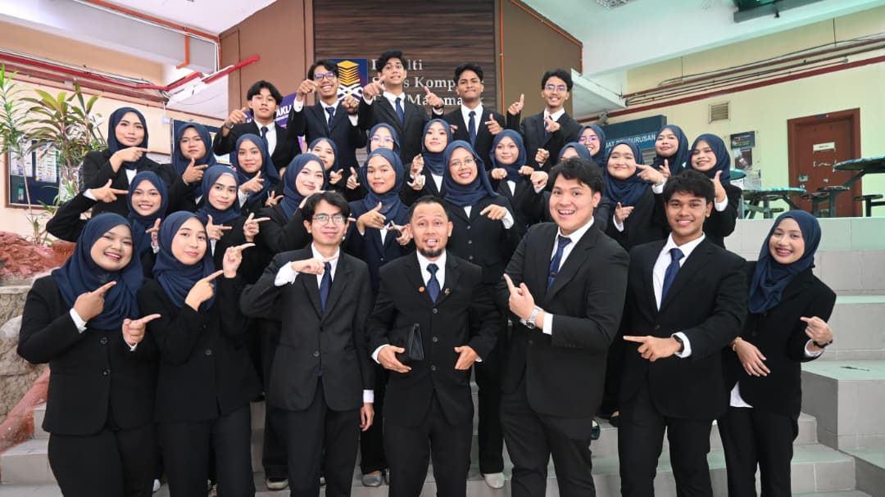
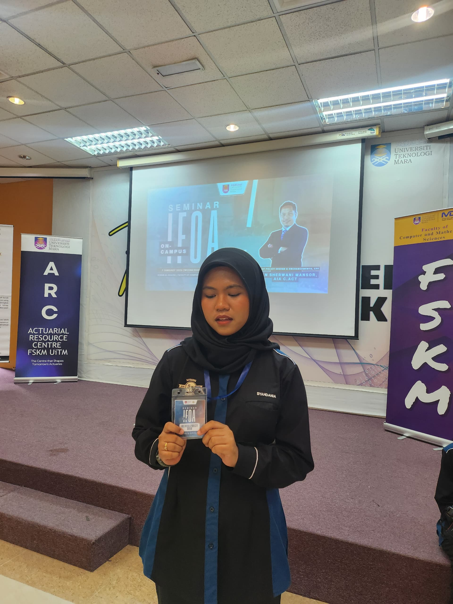
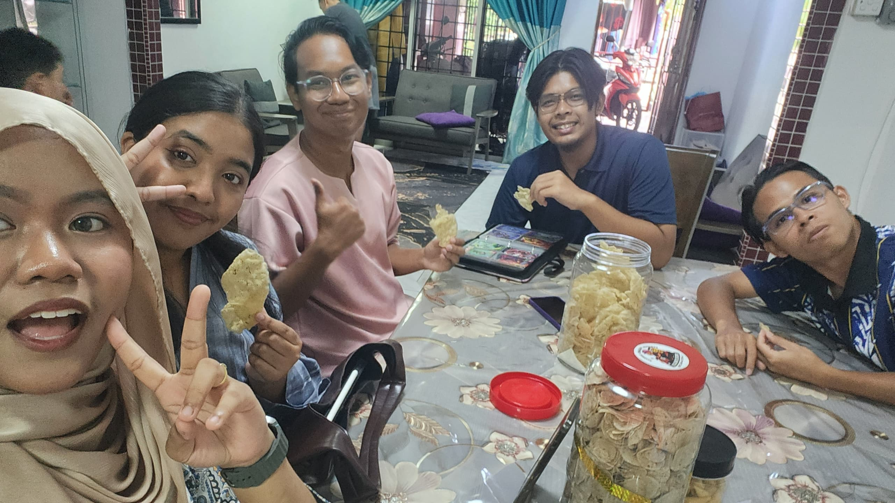

Professional experience
Event Assistant · Tencent Games
Role summary
- Supported a large-scale gaming and esports convention involving Tencent PUBG Mobile and Honor of Kings.
- Assisted with registration, crowd management, booth activities and participant engagement.
- Helped coordinate event activities in a high-visitor-traffic environment.
- Built adaptability, communication, teamwork and detail-oriented event coordination skills.
Moments



